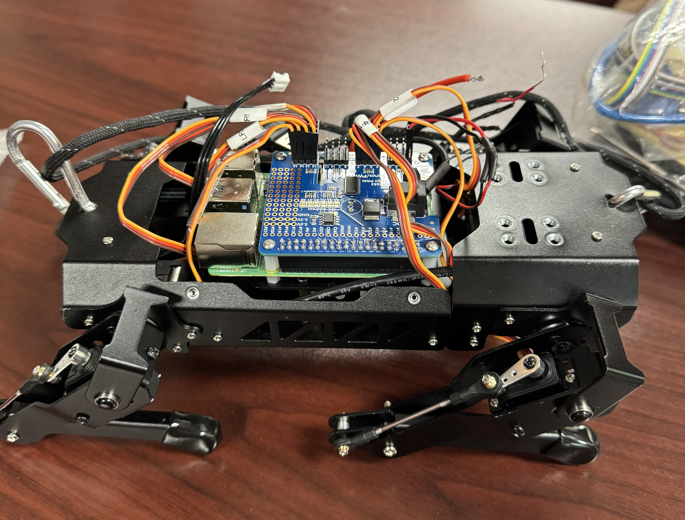
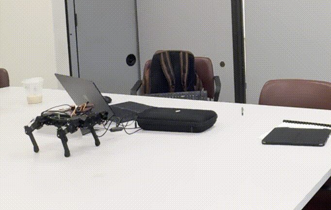
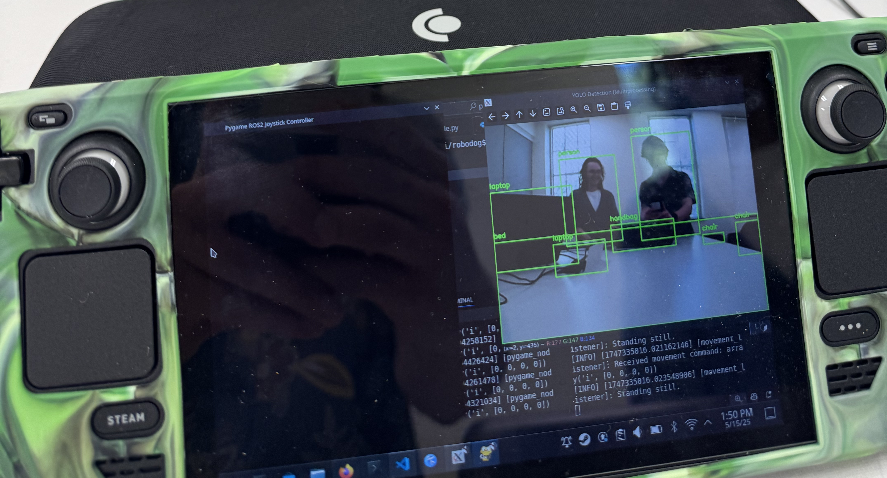

~1/29/2025
During my Senior Capstone class at University, I collaborated with 3 classmates to take on a robotics project. Given our skill level at the time, it was pretty ambitious, but the experience and process was unforgettable. Originally, the project was going to be a bi-pedal robot that could sense its environment and move around. We were all just programmers, no engineering or electrical backgrounds whatsoever. So after tons of studying, making models, and troubleshooting we were eventually approached by a curious professor who later handed us a previous project that was sourced from one of his classes. This group had the opposite problem we had, all engineers but no programmers, so we took it off his hands and went from there!
What is Neptr?
Neptr was a quadruped robot that utilized the ROS2 (Robot Operating System) framework on a Raspberry-Pi 5 that can be operated live on a Valve SteamDeck. The robot used 8 servos as well as a 1080p camera connected to a PiHat (a small add on board that attaches to pins on the Raspberry Pi). The Raspberry-Pi was using Debian as its OS. As one member was setting up the movement algorithms for Neptr, and the other was setting up a 3D environment for a digital copy of Neptr, my primary contribution was setting up the physical hardware to implement our code, setting up the SteamDeck to connect to Netpr wirelessly, and also adding a live camera feed as well as object detection to Neptr, then porting the code and making adjustments as needed. The overall cycle of this project was a single semester, and there were many learning opportunities along the way. This article will mainly focus on my contributions of Neptr, or else this would be one very long article.

The Setup
Setting up the Raspberry Pi on Neptr was standard, just running off of Raspberry Pi's OS - which is just a flavor of Debian - as well as the ROS2 framework. Robot Operating System, or ROS for short, is an open source framework created to make robotics an easier process. The idea is that a robot's files (or tasks) are contained within nodes, and those nodes communicate to each other to operate. Nodes are meant to be made for a single task in mind (like movement or a camera feed). Another huge advantage is its native operability with simulations softwares such as Gazebo, where you can control the robot in a simulated environment using the same exact code that the robot would use in real life. The framework is very useful and has massive community support.
We did not want to use a standard controller for Neptr, we wanted to be able to use a controller that also had a screen so that we could look through the camera on Neptr and operate from there. Another feature we thought would be helpful was to also be able to run a simulated environment on the device in the event we cannot run Neptr in real life, whether it be hardware issues, or rapid prototyping of the code. Therefore, the Steam Deck was the perfect device for this job. The Steam Deck is a powerful handheld gaming console created by Valve, using a custom AMD APU, 16GB of RAM, running on the SteamOS. Unlike other consoles that keep their software closed with many failsafes to prevent users from accessing the software within the console, Valve went in a different direction keeping SteamOS open and available for users to run through and add their features as needed. SteamOS is actually just a specialized version of Arch Linux, which, for those familiar with Linux, opens up a lot of possiblities for tinkering.
Because there was no native support of VScode made for SteamOS at the time, and other flavors of Linux had little hardware support with the Steam Deck, I had used Ubuntu 22.04 running in a virtual environment within SteamOS. There was some overhead going in this direction, but it made troubleshooting a little easier overall.
Getting It All Together
Now that there were two devices operating on a codebase separately, a version control system was now a top priority in ensuring that our project operates smoothly, and that if there were any type of bug, it would be easy to rule out that both systems were using the same version of the repository. Git was very helpful in this. Once we had the movement node fully operational with Neptr, and some fine adjustments with the code, we were able to get Neptr to move around seemlessly.
As for the Steam Deck, creating a script for movement was pretty simple. Having the code read the signals emitted from the Steam Deck's analog sticks and then creating a deadzone at which the robot would respond to. Simply, when the analog values exceeded a certain threshold in a given direction, the robot would move in that direction. With that process in mind, we have integrated the movement script with the controlling script. When operating under ROS, these scripts embedded into nodes would communicate with each other under the hood.

The last feature I was able to add before the semester ended was camera feed and object detection. This was in collaboration with a group member, and together, we utilized the OpenCV library to gain access to a camera feed that would be live on the Steam Deck, and for the object detection, Neptr used the widely popular YOLO (You Only Look Once) model. This model has many versions available, very reliable, and has many objects in its model memorized, saving us tons of time in the process. In short, YOLO looks through our camera image and draws boxes on objects it recognizes. Because of the remote connection from Neptr to the Steam Deck, there was a slight input delay, but hardly noticeable.

The Finale
Together, these components laid the foundation of what Neptr became, a quadruped robot that controls via a Steam Deck capable of Object Detection. Unfortunately, our semester ended just as our 3D simulated enviornment - done by another group member at the time - was coming together. With some members graduating and the project being school property, we had to turn it in over the summer - so it's been shelved indefinitely since. There were many features we wanted to add, and there were many more things to learn, but along the way we gained valuable knowledge and experience along the way. That said, since I still have access to the documentation repository, I plan to enventually return to this project and build a more modern, polished version of Neptr.
For now, you can find more projects here! Thanks for reading!